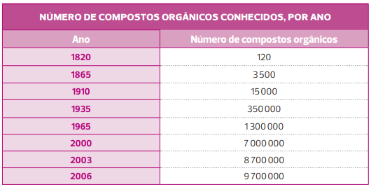

Lixo reciclável × lixo orgânico.
O mundo moderno e o desenvolvimento de novas tecnologias nos proporcionaram mais conforto, trazendo inúmeros benefícios, como o aumento da nossa expectativa de vida. No entanto, todo esse avanço veio acompanhado de um grande problema: o aumento do consumo implicou a geração de uma grande quantidade de lixo. Diante disso, a coleta seletiva passou a ter grande relevância na preservação do planeta e dos recursos naturais. Hoje, separar o lixo para a reciclagem tem importância vital na preservação do meio ambiente.
No contexto científico, plásticos e papéis são materiais orgânicos. No entanto, na coleta seletiva, convencionou-se como lixo orgânico (também chamado de lixo úmido) resíduos de origem animal e vegetal, como restos de comida, e materiais não recicláveis, como papel higiênico. Já o lixo reciclável (conhecido também como lixo seco) é aquele composto de plástico, papel, vidro e metal.
- Você jogaria uma garrafa de plástico em um lixo orgânico ou reciclável? Com base em que ponto de vista?
- Qual a relação do elemento químico carbono com a Química Orgânica?
Neste capítulo serão abordadas as habilidades EM13CNT104 , EM13CNT201 e EM13CNT310 .
Histórico da Química Orgânica e os materiais orgânicos
Compostos orgânicos são conhecidos desde a Antiguidade, período que abrange da invenção da escrita (de 4000 a.C. a 3500 a.C.) até a queda do Império Romano do Ocidente (476 d.C.) e o início da Idade Média (século V). Porém, a expressão “ substância orgânica ” foi usada pela primeira vez no século XVIII, pelo químico sueco Torbern Olof Bergman (1735-1784), um dos pioneiros a se aventurar na organização das substâncias orgânicas conhecidas até o momento.
Segundo Bergman, as substâncias poderiam ser classificadas em:
- • orgânicas: aquelas extraídas de organismos vivos;
- • inorgânicas: aquelas pertencentes ao reino mineral.
Apesar da classificação realizada por Bergman, os químicos, por muito tempo, não conseguiram entrar em consenso sobre a origem orgânica ou inorgânica das substâncias, uma vez que não tinham êxito em reproduzir, em laboratório, os compostos presentes nos seres vivos. Por exemplo, eles conheciam a composição química do açúcar (carbono, hidrogênio e oxigênio), porém não sabiam como juntar os elementos químicos para que eles reagissem e sintetizassem (moléculas seriam “fabricadas” pelo processo de síntese, partindo de moléculas mais simples para produzir moléculas mais complexas). Acreditavam que a produção in vitro desses compostos estava além da capacidade humana, considerando a existência de uma força vital.
O químico sueco Jöns Jacob Berzelius (1779-1848) acreditava na teoria da força vital (ou vitalismo ). Ele defendia a ideia de que os organismos vivos possuíam uma força vital que não podia ser analisada, muito menos sintetizada pelos cientistas, justificando, assim, a incapacidade de explicar os processos biológicos pelas leis regentes da Química ou, ainda, da Física. Com essa teoria, proposta por ele em 1807, um composto orgânico só poderia ser sintetizado por um organismo vivo. O estabelecimento dessa teoria acabou gerando uma barreira para as pesquisas realizadas nessa área, uma vez que os cientistas não teriam a “força vital” para sintetizar substâncias em laboratório.
Um aluno de Berzelius merece destaque nesse processo, pois foi ele quem ajudou a iniciar o processo de superação dessa barreira científica: trata-se do químico alemão Friedrich Wöhler (1800-1882). Ele realizou, em 1828, um experimento em laboratório no qual reagiu cianato de chumbo com hidróxido de amônio, obtendo cianato de amônio, material que não continha as características dos cianatos. Em seguida, aqueceu o cianato de amônio, criando cristais de ureia , uma substância orgânica que é o produto final do metabolismo de proteínas na maioria dos animais vertebrados, eliminada na urina. Estava feita a primeira síntese de um composto orgânico em laboratório; Wöhler havia sintetizado a ureia.
Observe, no esquema a seguir, que as duas substâncias apresentam a mesma fórmula molecular (CH 4 N 2 O). No entanto, devido a um rearranjo dos átomos no processo de síntese, notamos que o composto iônico (inorgânico) cianato de amônio foi transformado no composto molecular (orgânico) ureia.
Todo composto orgânico contém, obrigatoriamente, átomos de carbono. No entanto, nem todo composto que contém carbono é orgânico . Por exemplo, o dióxido de carbono (CO 2 ), o carbonato de sódio (Na 2 CO 3 ) e o ácido carbônico (H 2 CO 3 ) têm carbono e são considerados compostos inorgânicos; são, respectivamente, um óxido, um sal e um ácido inorgânico. Para diferenciar corretamente um composto orgânico de um inorgânico, devemos analisar suas propriedades físicas (como temperatura de fusão e ebulição) e químicas (como tipo de ligação e inflamabilidade).
O químico alemão Hermann Kolbe (1818-1884) também contribuiu para o abandono da teoria da força vital. Em 1845, utilizando compostos inorgânicos, ele realizou a síntese total de um composto orgânico: o ácido acético (C 2 H 4 O 2 ), presente no vinagre.
Atualmente, qualquer substância orgânica pode ser obtida sinteticamente, o que levou ao crescimento do número de compostos orgânicos conhecidos. Veja na tabela a seguir.
MAAR, J. História da Química – segunda parte: de Lavoisier ao sistema periódico. Florianópolis: Papa-Livro, 2011. p. 399.
Podemos observar, pela análise da tabela, que o número de compostos orgânicos sintetizados ou obtidos na natureza cresceu significativamente após o experimento realizado por Wöhler, que abriu caminho para que outros cientistas também fizessem experimentos para produção de compostos orgânicos a partir de compostos inorgânicos. Nesse tipo de síntese, vale lembrar que o custo do processo é um fator que deve ser levado em consideração na hora de escolher entre produzir a substância em laboratório e obtê-la diretamente da natureza. Ao pensar em custos, devemos principalmente analisar os custos ambientais envolvidos na extração de um composto, pois, com determinadas ações, podemos causar desequilíbrio na cadeia alimentar, levando à extinção de espécies, o que traz um prejuízo muito maior. Por exemplo, desde 1630, no Peru, padres espanhóis utilizavam a quinina no combate à malária. Ela era obtida da casca de uma árvore sul-americana do gênero Cinchona , natural dos Andes, encontrada em altitudes que variam entre 1 000 m e 3 000 m.A quinina foi sintetizada em laboratório em 2001, mas continua sendo obtida das árvores.

Fórmula estrutural da quinina, composto orgânico utilizado no tratamento da malária, extraída da árvore do gênero Cinchona .
mashuk/iStockphoto.com
Com o crescimento do número de compostos orgânicos conhecidos, a definição do termo “orgânico” (extraído de “organismo vivo”) tornou-se inadequada. Antoine Lavoisier (1743-1794) foi um dos primeiros a descobrir que compostos vegetais e animais continham o elemento químico carbono . Para ele, todo composto orgânico também continha hidrogênio e oxigênio, podendo, ainda, conter nitrogênio e fósforo. A definição atual difere um pouco daquela proposta por Lavoisier. O químico alemão Friedrich August Kekulé von Stradonitz (1829-1896) propõe a definição:
Química Orgânica é o ramo da Química que estuda os compostos de carbono.
Uma vez que você já conhece o termo “composto orgânico” no contexto científico, voltemos ao sentido de “orgânico” nos alimentos, tema de abertura da unidade. No supermercado, encontramos, por exemplo, tomates “convencionais” e tomates “orgânicos”. Sob o olhar da Química, todo tomate é orgânico, uma vez que é formado por substâncias orgânicas, como o licopeno (de fórmula molecular C 40 H 56 ), que apresenta cor vermelha. No entanto, um tomate “orgânico” do ponto de vista da agricultura seria aquele que foi cultivado sem agrotóxicos. Podemos concluir, desse modo, que não há certo ou errado aqui, apenas interpretações diferentes de acordo com o contexto.
Tomates “convencionais” e tomates “orgânicos” disponíveis em um supermercado.
Tyler Olson/Shutterstock.com
Empreendedor transforma lixo orgânico em adubo, Sincovat.
Cada brasileiro gera, em média, 1 kg de lixo por dia. Esse vídeo mostra um empreendedor da cidade de Taubaté, em São Paulo, que resolveu criar um negócio a partir do reaproveitamento desse tipo de material, criando o “Biociclo”.
1
Unicamp-SP A ureia (CH
4 N
2 O) é o produto mais importante de excreção do nitrogênio pelo organismo humano. Na molécula da ureia, formada por oito átomos, o carbono apresenta duas ligações simples e uma dupla, o oxigênio uma ligação
dupla, cada átomo de nitrogênio três ligações simples e cada átomo de hidrogênio uma ligação simples. Átomos iguais não se ligam entre si. Baseando-se nestas informações, escreva a fórmula estrutural da ureia, representando
ligações simples por um traço (
Resolução:
Com base nas informações do enunciado, a fórmula estrutural da ureia é:
Lixões
Na abertura deste capítulo, abordamos o tema “lixo” para explorarmos o termo “orgânico” relacionado a ele.
No município de Duque de Caxias, no Rio de Janeiro, um bairro abrigou, por 35 anos, um dos maiores lixões da América Latina: o Jardim Gramacho, com 1,3 milhão de metros quadrados, localizado a apenas 30 km da praia de Ipanema. Desde 1978, o local sempre foi fonte de renda para a população da região, que vive em situação precária. Segundo pesquisa da ONG TETO, a renda média per capita dos moradores do Jardim Gramacho é de R$ 331,96, cerca de R$ 11 por dia. Não há saneamento básico nem água encanada, e a eletricidade depende de “gatos” (instalações clandestinas de energia elétrica).
A partir de 1996, seguindo exigências da Fundação Estadual de Engenharia do Meio Ambiente (FEEMA), o lixão virou um aterro controlado, em que resíduos não ficam a céu aberto, causando menos impacto ao meio ambiente. Existem barreiras de proteção que impedem que o chorume se expanda e polua o lençol freático. As barreiras químicas são um sistema terciário que combina os efeitos da fitorremediação (como Wetland, termo utilizado para caracterizar vários ecossistemas naturais que ficam parcial ou totalmente inundados durante o ano, como várzeas de rios, banhados, pântanos, manguezais) com os das barreiras reativas de contenção de contaminantes com o solo. Os contaminantes são absorvidos pelas raízes, os quais nelas são armazenados ou transportados e acumulados nas partes aéreas das plantas; por outro lado, a barreira de solo reativa, ao entrar em contato com o efluente, retém contaminantes como cádmio, níquel, chumbo, cobre e zinco.
O lixão ganhou destaque após o documentário Lixo extraordinário , do artista plástico Vik Muniz, que mostrou a realidade dos catadores de lixo da região. O filme ganhou diversos prêmios pelo mundo e foi indicado à categoria de Melhor Documentário do Oscar de 2011.
Disponível em: <http://p.p4ed.com/JJBJJ>. Acesso em: 2 ago. 2021.
Assista ao documentário e discuta em sala sobre as consequências de se ter um lixão próximo de uma comunidade e de recursos hídricos. O que é o chorume? Qual tratamento é realizado para o chorume infiltrado no solo?
1
Quais são os principais elementos químicos encontrados nos compostos orgânicos?
2
Segundo Bergman, as substâncias poderiam ser classificadas em orgânicas e inorgânicas. Qual a diferença entre elas?
3
O que foi a teoria da força vital?
4
Wöhler contribuiu para a descrença na teoria da força vital. Como ele conseguiu isso?
5
Qual o contexto de uso do termo “orgânico” na agricultura?
6
Qual das alternativas a seguir apresenta apenas compostos orgânicos?
- a) CO 2 , GeO 2 e SiO 2 .
- CH 4 , C 3 H 8 e C 2 H 4 O 2 .
- Na 2 CO 3 , CO e H 2 CO 3 .
- CH 4 , SiH 4 e GeH 4 .
- C 2 H 6 O, CH 2 O e CO 2 .
1
A Química Orgânica, inicialmente, foi definida como a parte da Química que estudava os compostos:
- do Reino Vegetal.
- moleculares.
- extraídos do Reino Animal.
- iônicos.
- extraídos dos seres vivos.
2
A Química Orgânica, atualmente, é definida como a parte da Química que estuda compostos:
- extraídos dos seres vivos.
- extraídos do Reino Animal.
- iônicos.
- do elemento químico carbono.
3
“Compostos orgânicos não podem ser formados somente sob a influência de forças físicas e químicas comuns, mas necessitam da intervenção de uma força vital particular.” Esse fragmento de “lei” refere-se à “teoria da força vital”, proposta por:
- Wöhler.
- Berzelius.
- Bergman.
- Wurtz.
- Kolbe.
4
Etec-SP Cada brasileiro gera diariamente, em média, 500 gramas de lixo. Esse número chega a 1 kg, dependendo do poder aquisitivo e do local onde se vive. Só em São Paulo são produzidas 12 mil toneladas diárias de lixo. Além do volume, o lixo causa poluição e problemas sanitários urbanos.
Dentre as recomendações e ações apontadas para diminuir o problema do lixo estão as seguintes: separar e coletar o lixo reciclável, reciclar o lixo, reduzir o descarte de materiais, destinar o lixo “orgânico” para compostagem, destinar o lixo para o aterro sanitário
Ainda sobre o lixo, pode-se afirmar que:
- lixo reciclável é todo material sólido que vai para a lata de lixo.
- lixo reciclável é todo tipo de material descartável, desde que esteja separado.
- compostagem é o processo pelo qual o lixo orgânico é transformado em adubo.
- aterro sanitário é onde é depositado e compactado todo tipo de plástico descartado.
- reduzir o descarte de materiais significa não produzir e consumir produtos industrializados.
5
Unicamp-SP A matriz energética brasileira tem se diversificado bastante nos últimos anos, em razão do aumento da demanda de energia, da grande extensão do território brasileiro e das exigências ambientais. Considerando-se as diferentes fontes para obtenção de energia, pode-se afirmar que é vantajoso utilizar
- resíduos orgânicos, pois o processo aproveita matéria disponível e sem destino apropriado.
- carvão mineral, pois é um recurso natural e renovável.
- energia hidrelétrica, pois é uma energia limpa e sua geração não causa dano ambiental.
- energia nuclear, pois ela usa uma fonte renovável e não gera resíduo químico.
6
Acafe-SC Na reação:
o produto foi preparado em laboratório, pela primeira vez, por:
- Bunsen.
- Arrhenius.
- Le Bel e Van’t Hoff.
- Wöhler.
7
UFRGS A síntese da ureia, a partir de cianato de amônio, segundo a equação
desenvolvida por Wöhler, em 1828, foi um marco na história da Química porque:
- provou a possibilidade de se sintetizarem compostos orgânicos a partir de inorgânicos.
- foi a primeira síntese realizada em laboratório.
- demonstrou que os compostos iônicos geram substâncias moleculares quando aquecidos.
- se trata do primeiro caso de equilíbrio químico homogêneo descoberto.
- provou que o sal de amônio possui estrutura interna covalente.
8
Mackenzie-SP A ureia, que constitui de 2 a 5 por cento da urina humana, é um dos compostos obtidos no processamento das proteínas. Em solução aquosa, a ureia decompõe-se, originando gás carbônico e amônia. Dentre as fórmulas a seguir, aquela que representa a ureia é:

Superação
Fuvest-SP Pesquisadores da Universidade de São Paulo mostraram que as bromélias, que vivem no alto de árvores e acumulam água entre suas folhas, obtêm nitrogênio da ureia presente nessa água e que é proveniente da urina dos anfíbios que aí habitam. Nessas plantas, a ureia sofre uma reação catalisada pela enzima urease, que origina amônia e gás carbônico. Em outra reação, catalisada pela enzima sintetase de glutamina, a amônia formada é utilizada na produção do aminoácido glutamina.
- Escreva a equação química balanceada que representa a reação, citada no texto, em que são produzidos amônia e gás carbônico.
- Em que processos, associados ao crescimento das plantas, as bromélias podem utilizar o gás carbônico e a glutamina?